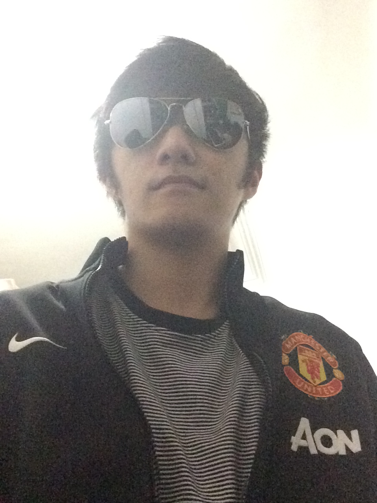

2024 — 2025
Engineering Manager
Flo Energy · Singapore
Led and grew an engineering team.

My name is Ricky Kennedy and I'm a Senior Software Engineer at Flo Energy in Singapore. I'm a certified Scrum Master and currently building with Kotlin day to day. Before that I worked with Java for around 3 years and spent 2 years as a Web & Mobile Developer using Appcelerator (Titanium). I hold a Diploma in Business Application from Republic Polytechnic and a B.Sc. in Computer Science, majoring in Digital Systems Security, from the University of Wollongong. I've been living in Singapore for years, since .
I'm observant and mostly quiet until I need to speak up. I'm a dedicated software engineer who not only loves to code but also loves finding the solution to a problem. I can be shy at a first meeting, but once you get to know me I turn out to be rather noisy. I love working in a team, and I'm just as comfortable working on my own when needed.
Learning event-driven and data-driven approaches, while applying agile methodology in project management.
I came to love programming during my polytechnic years, around 2010. It probably clicked because my mind thinks systematically, so programming suited me well. My very first language was Python — it was genuinely exciting to make a turtle move left and right just by writing code. A year later I picked up Java, HTML and PHP.
In my final year of polytechnic I built a Twitter crawler in Python to gather tweets for analysis. Back then it was a real challenge — so much I didn't know yet — and it took a lot of proof-of-concept work and learning. I earned an 'A' for the project, but I still felt I could have done more with more knowledge.
After graduating from polytechnic I worked as a backend web developer, using the CakePHP framework for the first time alongside a great group of people. I then went on to complete my degree, where I learned a lot about systems security and algorithms. I was drawn to mobile development, went looking for that kind of work — and that's how I ended up doing both mobile and web development, and eventually where I am today.